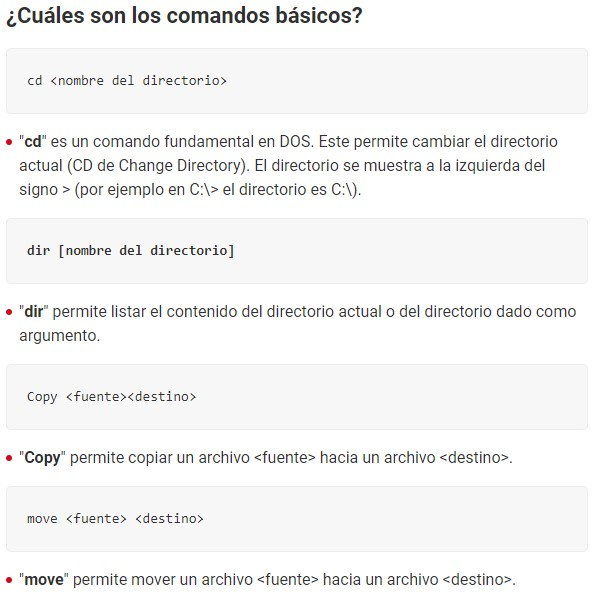
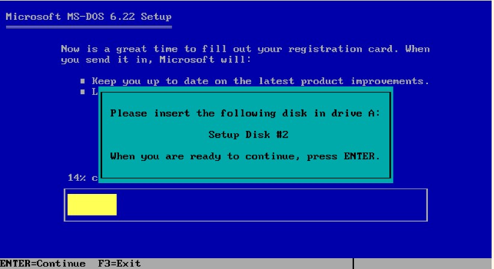
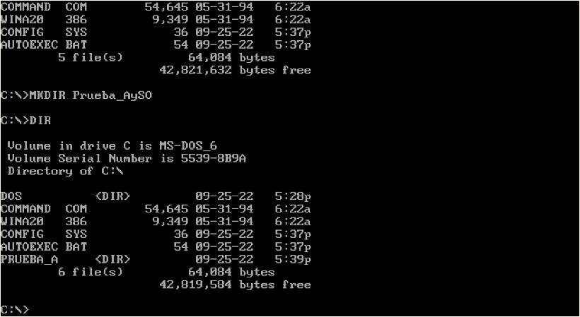
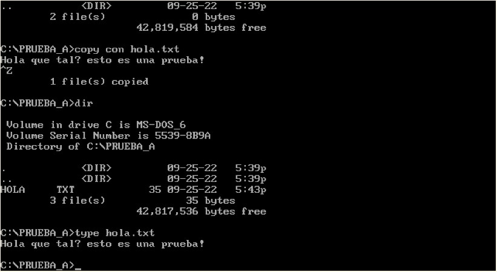

El sistema operativo MS-DOS (de las siglas en ingles MicroSoft Disk Operating System), es parte de la familia DOS. Este sistema operativo fue lanzado en 1982, para las computadoras personales de IBM las PC. Este sistema operativo es un evolución del sistema QDOS, y su ultima version estable fue la 8.0, lanzada dentro de Windows ME en septiembre de 2000. Esta fue remplazada por versiones de Windows que corrían directamente una interfaz gráfica.
El inicio de las interfaces gráficas de Microsoft empieza dentro del periodo MS-DOS, la empresa distribuía su sistema operativo que contenía un programa ejecutable que se llamaba windows.exe este una ves iniciado el sistema operativo, al ser ejecutado por el usuario, le abría en pantalla un sistema gráfico de ventanas. Este fue el camino de transición hasta que directamente se empezaron a distribuir versiones de Windows a secas, sin interfaz textual como medio de interacción principal con el usuario.
El MS-DOS tiene como antecesor el QDOS, un sistema comprado por Microsoft a la empresa Seattle Computer Products. Este desarrollo de Microsoft fue por un encargo de la empresa IBM, para que este fuera distribuido con las computadoras personales de la linea PC. Su desarrollo comenzó en 1981 y fue lanzado en 1982 como MS-DOS 1.0. Tuvo ocho versiones y fue de los principales sistemas operativos, hasta que fue remplazado por sistemas operativos de interfaz gráfica.
El sistema operativo MS-DOS si bien fue desarrollado para la linea PC de IBM, este era compatible con gran cantidad de las computadoras personales de la competencia. Este era compatible con los procesadores de tecnologías x86, en este caso los Intel 8086. Aparte de de ser compatible con este tipo de procesador, la computadora debía contar con al menos:
Version 1.0 (características de PC IBM)
Por empezar tanto MS-DOS como GitBash, es software que no posee interfaz gráfica, es decir que son de interfaz textual, y el usuario deberá ingresar los comandos por teclado para realizar sus actividades.
Hay algunos comandos que comparten estos dos sistemas, tanto cd como mkdir, son comandos que se pueden utilizar tanto en sistemas basados en DOS, como en sistemas BASH. Y ambos ser sistemas de interfaz textual, tienen comportamiento muy similares, y formas de sintaxis para poder utilizar sus comandos prácticamente idénticas.


 
Estas pruebas las realizamos en la pagina https://www.pcjs.org/software/pcx86/sys/dos/microsoft/6.22/ , que permite emular una IBM PC e ir insertando los floppy disk para instalarlo, y luego correr el sistema operativo. Todo esto funciona de forma online en el navegador.